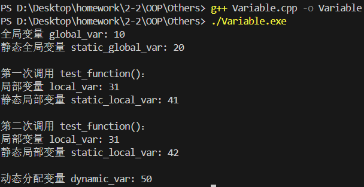

Lecture1: Using Objects
一、字符串（string）的使用
1. 基本操作
头文件需包含 <string>：
定义与初始化示例：
输入输出使用 cin 和 cout：
cout输出的使用
事实上cout << "AAA\n"是基本等价于cout << "AAA" << endl的，不过由于endl会刷新缓冲区，频繁使用会影响性能（尤其是在大量输出时）。如果你不关心立即刷新屏幕，可以改用\n，效率更高。
拼接与操作示例：
2. 常用成员函数
子字符串使用 substr(pos, len)：
赋值使用assign()：
string s1 = "Hello";
s1.assign("World"); // s1 赋值变为 "World"
string s2;
s2.assign(5, 'A'); // s2 初始化为 "AAAAA"
s2.assign("Hello", 3); // 取前3个字符，s2 变为 "Hel"
插入字符串使用insert(pos, str)：
string s1 = "Hello";
s1.insert(2, "WTY"); // 在位置2插入 "WTY"，s1变为 "HeWTYllo"
string s2 = "C++";
s2.insert(3, " Programming"); // 在末尾追加，s2变为 "C++ Programming"
string s3 = "12345";
s3.insert(1, 3, '-'); // 在位置1插入3个'-'，s3变为 "1---2345"
删除部分内容使用erase(pos, len)：
string s1 = "Ciallo";
s1.erase(2, 3); // 从位置2删除3个字符，s 变为 "Ciao"
string s2 = "Hello World";
s2.erase(5); // 从位置5删除到末尾，s2 变为 "Hello"
替换内容使用replace(pos, len, new_str)：
string s = "Hello World";
s.replace(6, 5, "Universe"); // 从位置6开始替换5个字符为 "Universe"，结果 "Hello Universe"
string s2 = "C++ is hard";
s2.replace(4, 2, "not"); // 替换 "is" 为 "not"，结果 "C++ not hard"
string s3 = "123456";
s3.replace(1, 4, "WTY"); // 从位置1替换4个字符为 "WTY"，结果 "1WTY6"
二、内存模型
1. 变量类型
| 变量类型 | 存储区域 | 说明 |
|---|---|---|
| 全局变量 | 全局数据区 | 程序启动时分配，生命周期长 |
| 静态全局变量（static） | 全局数据区 | 仅当前文件可见 |
| 局部变量 | 栈（stack） | 函数结束时自动释放 |
| 静态局部变量（static） | 全局数据区 | 函数调用间保持值不变 |
| 动态分配变量（new/delete） | 堆（heap） | 手动管理生命周期 |
问AI要了一段简单的测试代码，可以跑来看看：
#include <iostream>
using namespace std;
// 全局变量（全局数据区）
int global_var = 10;
// 静态全局变量（全局数据区，仅当前文件可见）
static int static_global_var = 20;
void test_function() {
// 局部变量（栈）
int local_var = 30;
local_var++;
cout << "局部变量 local_var: " << local_var << endl;
// 静态局部变量（全局数据区，函数调用间保留值）
static int static_local_var = 40;
static_local_var++;
cout << "静态局部变量 static_local_var: " << static_local_var << endl;
}
int main() {
// 动态分配变量（堆）
int* dynamic_var = new int(50);
// 全局变量和静态全局变量在程序启动时已初始化
cout << "全局变量 global_var: " << global_var << endl;
cout << "静态全局变量 static_global_var: " << static_global_var << endl;
// 调用函数两次，观察局部变量和静态局部变量的变化
cout << "\n第一次调用 test_function()：" << endl;
test_function();
cout << "\n第二次调用 test_function()：" << endl;
test_function();
// 动态分配变量需手动释放
cout << "\n动态分配变量 dynamic_var: " << *dynamic_var << endl;
delete dynamic_var;
return 0;
}

2. 静态变量
静态全局变量限制其他文件访问（通过 static 修饰）。
静态局部变量特点：首次访问时初始化，函数调用间保留值。
三、常量（const）
1. 常量变量
常量指针与指针常量：
2. 函数参数中的const
保护数据不被修改：
3. 动态分配的常量对象：
四、指针与对象
1. 基本操作
定义指针示例（和C语言差不多）：
访问成员方法（和C语言差不多）：
注意事项：
未初始化的指针可能指向无效对象：
指针赋值指向同一对象：
2. 动态内存管理（new/delete）
2.1 动态分配与释放
单个对象分配与释放：
数组分配与释放：
2.2 常见错误
重复释放同一内存：
释放方式不对：
五、引用（References）
1. 基本特性
引用必须初始化：
引用不可重新绑定：
2. 引用与指针の简单对比
| 特性 | 引用 | 指针 |
|---|---|---|
| 是否可为空 | 否 | 是 |
| 能否重绑定 | 否（绑定后不可变） | 是（可指向其他地址） |